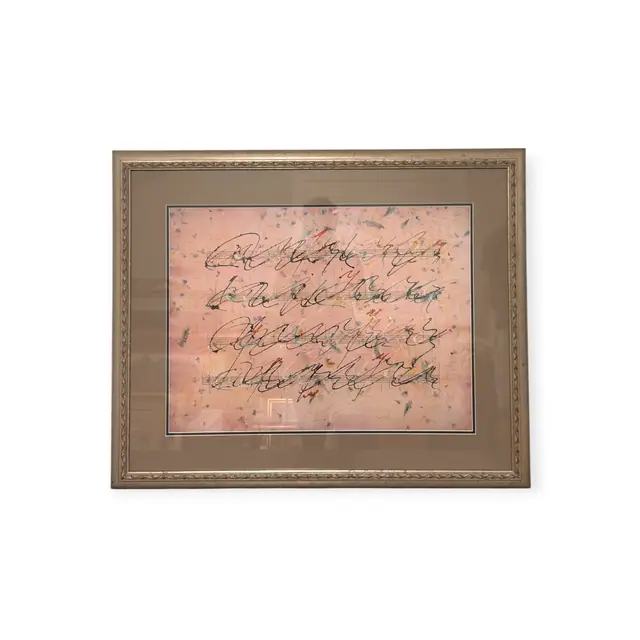
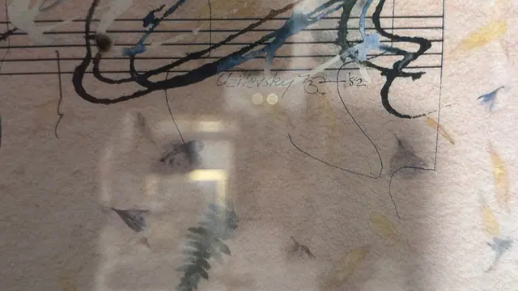
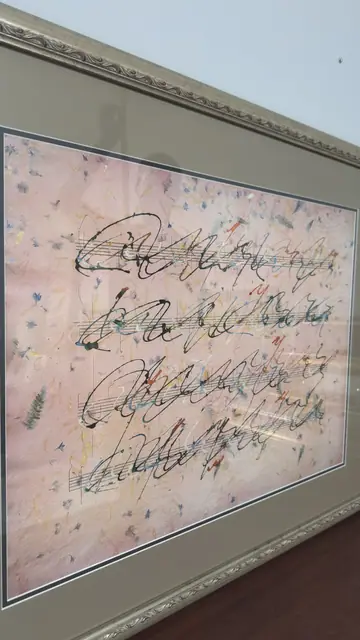
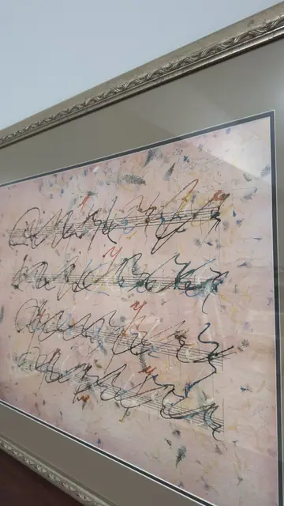

Paintings & Prints
Asemic Calligraphy on Handmade Petal Paper, Uzilevsky, Signed, Framed
Uzilevsky · dated '82 - early 1980s
Price Upon Request




About the Item
Uzilevsky. Four ruled staves carry rows of sweeping black brush characters that read like writing but spell nothing, looping and doubling back across a soft blush-pink sheet. The paper itself is the second subject: handmade, deckled and thickly flecked with pressed petals, blue and violet flower heads and a whole fern frond caught in the pulp. Small accents of rust-red, ochre and slate blue flicker inside the black strokes, and a faint gold rectangle is drawn at the lower centre. Deep taupe mat with black-and-cream core lines, in a carved champagne-silver moulding under glass. Medium: serigraph on handmade paper with pressed botanical inclusions. Signed lower right of the image, in pencil, reading "Uzilevsky ... '82". Inscribed on the reverse or mount: Uzilevsky ... '82 (pencil, within the image at lower right; a looped mark or paraph sits between the name and the date). Condition: No damage visible through the glass. Heavy reflections of a window and the photographer across the glazing; the pressed botanical inclusions are original to the sheet, not foxing.
Details
- Creator:
- Uzilevsky
- Creation Year:
- dated '82 - early 1980s
- Dimensions:
- Height: 30.1 in (76.45 cm)
Width: 36.5 in (92.71 cm)
outside of frame - Medium:
- serigraph on handmade paper with pressed botanical inclusions
- Period:
- 20Th
- Condition:
- Offered in the condition shown in the photographs.
- Reference Number:
- VO-113
- Documentation:
- no certificate photographed
- Gallery Location:
- Uzilevsky ... '82 (pencil, within the image at lower right; a looped mark or paraph sits between the name and the date)